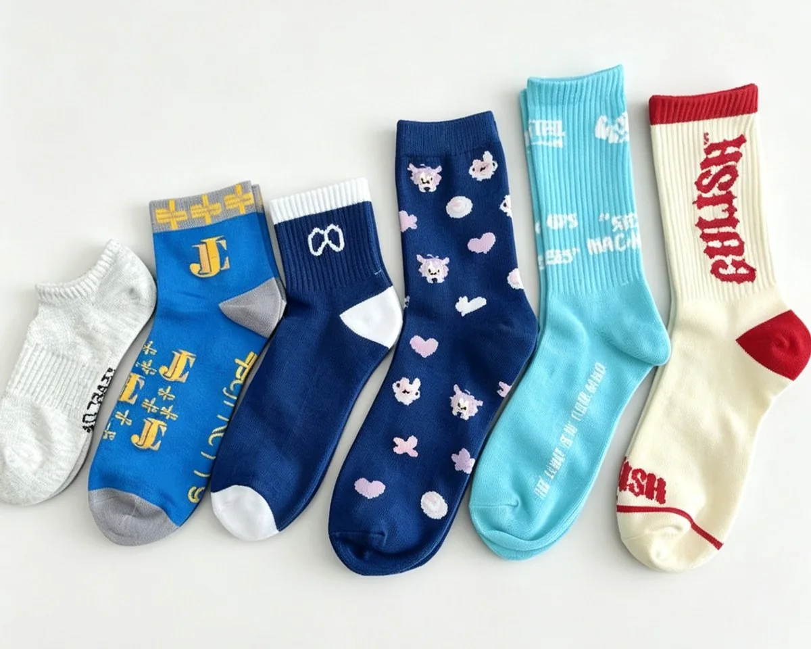

Buyer page — clubs and teamwear
A club order is a deadline with a colour attached: two colourways, three or four sizes, sometimes a name on every leg, and a first fixture that will not move. This page is about what that order looks like when we run it — including the club orders we are the wrong supplier for.

The order, in numbers
Eight lines. Two of them decide the price, and neither is the yarn.
| Minimum | 100 pairs per colourway, sizes split any way inside it |
|---|---|
| Two colourways | Home and away is two programmes and two setups |
| Size run | Three or four sizes is normal; EU 35–46 or your own chart |
| Names | Knitted, embroidered or printed — priced by method |
| Sample | 3–5 days after artwork approval |
| Bulk | 20 days for 1–500 pairs; rush slots held for kick-off dates |
| Packing | Per-player bags, numbered bags, or plain in tens |
| Colours | Pantone references matched against yarn cards |
Where we fit
Better to say this on the first reply than on the third.
If you need twenty-two pairs for one team, we are the wrong supplier. One hundred pairs per colourway is a machine setup: the cylinder has to be mounted, the feeders threaded and the needle selection programmed before a single sock exists. There is no version of that arithmetic in which twenty-two is efficient, and no negotiation that changes it.
A teamwear shop printing names onto a blank sock will serve that order better and cost you less. Pointing you there is a shorter conversation than quoting something we cannot run well.
Where we do fit: the club that needs a full squad plus spares plus a second colour, the school kitting out four year groups, the league buying on behalf of its clubs, and the teamwear distributor assembling all of the above into one shipment. In each of those the total is over a hundred pairs per colourway, and the complications are sizes, names and packing rather than quantity.
The calendar
Everything else is arithmetic from that date, and the arithmetic is short.
| Six weeks out | Colours, size split and name list locked |
|---|---|
| Five weeks out | Artwork approved; one pair knitted in 3–5 days |
| Four weeks out | Sample approved in your hand; bulk starts |
| One week out | Bulk complete, checked and packed |
| Match week | Cartons shipped — express, air, rail or sea |
Six weeks is comfortable. Four is tight but workable if the artwork is already decided. Three weeks means a rush slot and a hard rule that nothing changes after the sample is approved — which is a decision, not a negotiating position.
The date that gets missed is almost never bulk. It is the week spent choosing between two blues, because a yarn shade cannot be judged off a screen and a knitted swatch has to travel. Order the swatch first, before the artwork is final.
The size sheet
Collect sizes off the players, not off the coach’s memory. The split decides how many short runs the order contains, and a club that guesses ends up with eleven mediums and two smalls it cannot move.
Three columns is the whole order: size, quantity, name. Sizes inside one colourway can be split any way you choose, down to a single pair, because the minimum counts per colourway rather than per size.
Names are the same kind of question. A name can be knitted in, embroidered on or printed, and the cheap one changes with the shape of the order — one name across two hundred pairs is a different problem from twenty names across ten each. Send the list and all three get priced. The reasoning behind that is in A club order is not a small order.
Colours and crests
Colours come off yarn cards against your Pantone references, and a knitted swatch is approved before bulk, because dyed yarn can shift half a step and a colour that reads slightly wrong on a sock reads very wrong across a pitch.
A crest belongs to the club. Send the artwork with confirmation that the club has the right to use it. We do not check ownership and we do not keep club-branded stock in the warehouse, which is also why a club order is made once rather than pulled off a shelf.
Questions buyers ask
Straight answers, no sales copy.
100 pairs per colourway, and the sizes inside that colourway can be split any way you choose. A club running one colour needs 100 pairs. Home and away is two colourways, so it is two programmes and two setups before the first sock exists.
Yes, by one of three methods: knitted into the leg as jacquard, embroidered on afterwards, or printed. Which one is cheaper depends on how many names there are and how many pairs carry each one, so send the list and we price all three rather than guess.
Yes. The minimum counts per colourway, not per size, so a single pair in one size is a normal line on the sheet. What it does cost is changeover time — six sizes is six short runs, and that is priced into the quote rather than hidden in it.
Tell us at order stage that a top-up is likely. A repeat in a colourway already programmed is the easiest order to slot in; a top-up in a new colour starts the setup over. Knowing one is coming changes how the first run is scheduled.
We make the sock and apply the crest; we do not own it. Send the artwork together with confirmation that the club has the right to use it. We do not check crest ownership and we do not hold club-branded stock, which is why the confirmation is asked for once, at sampling.
Per-player bags with the name on each, numbered bags, or plain packing in tens. Per-player packing is the step clubs underestimate most: sixty pairs in sixty bags with sixty names is sixty small decisions, and it is done by hand.
Buying by situation
Same factory, different order shapes.
Three columns is enough to quote: size, quantity, name. If the order is under a hundred pairs per colourway, we will say so on the first reply rather than the fourth.